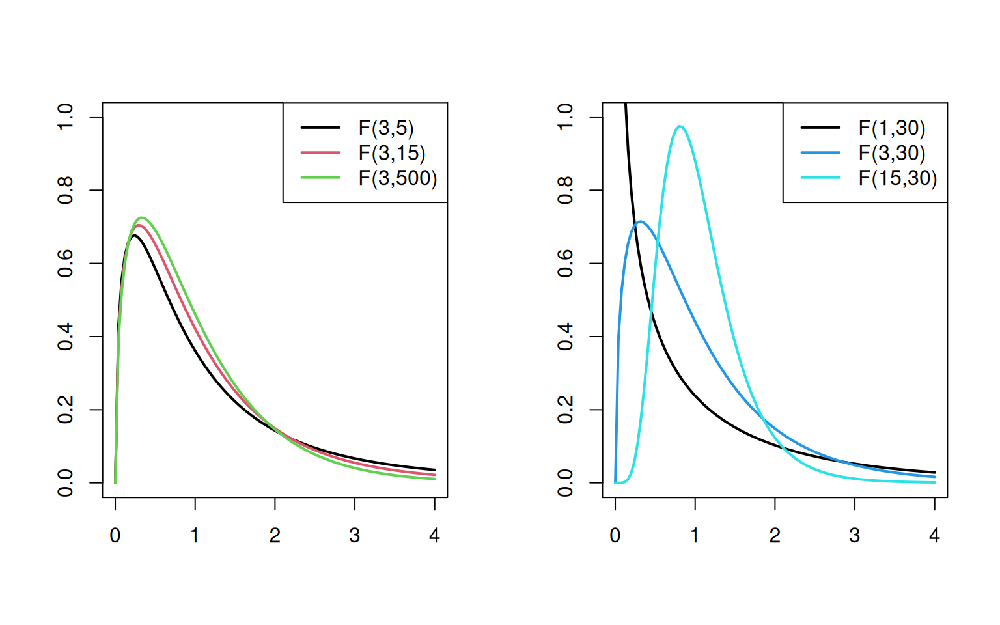
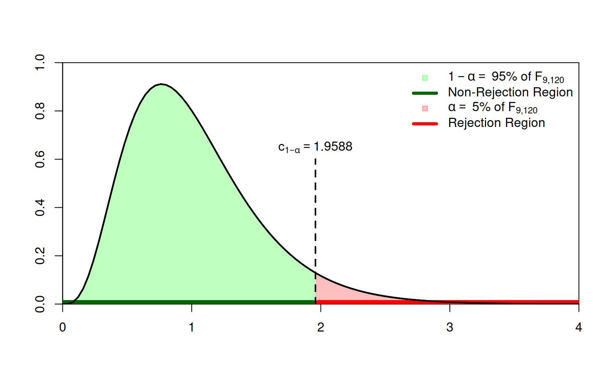
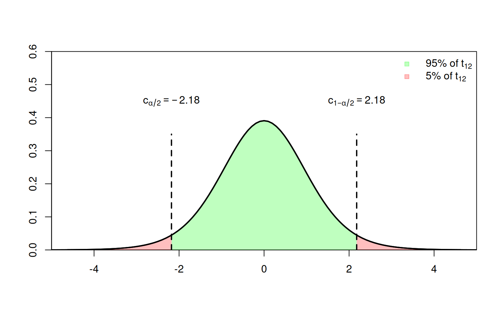
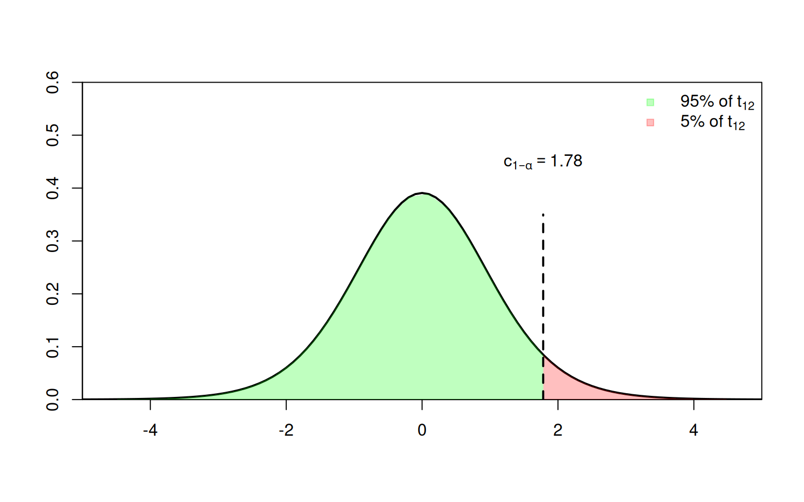
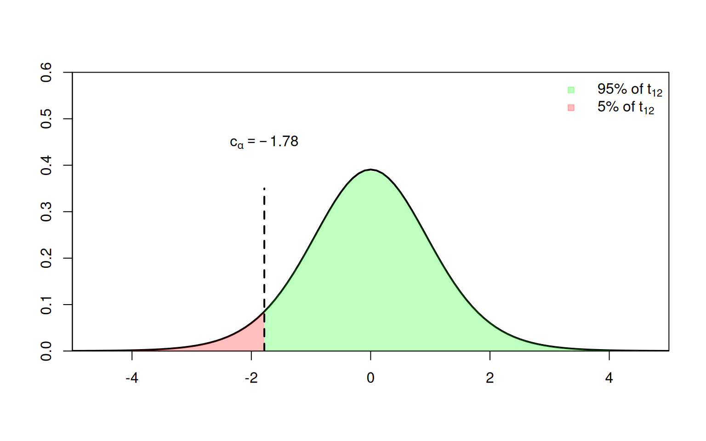
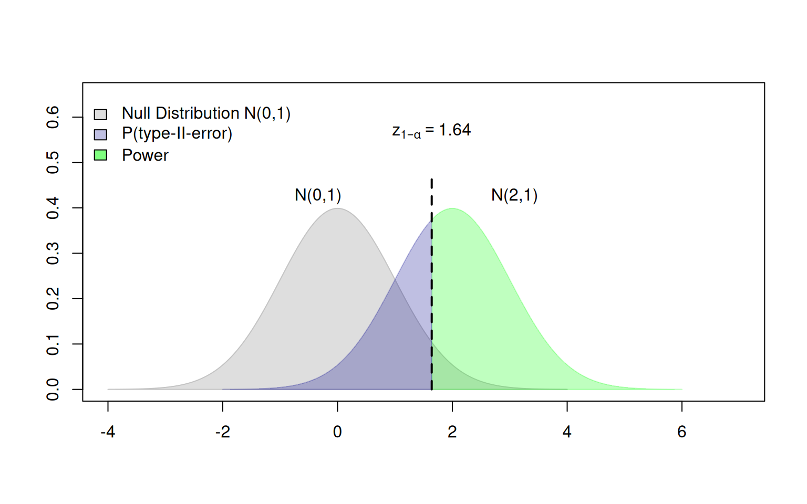
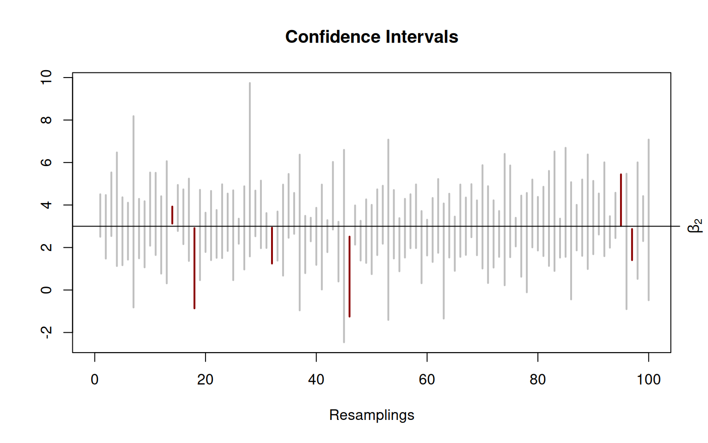
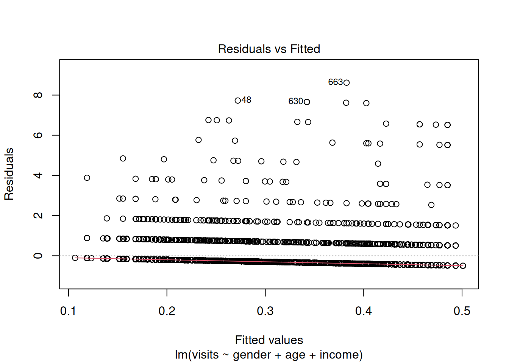

6 Small Sample Inference
The original version of this chapter was inspired by Chapter 1 of Hayashi (2000). The current version, however, deviates in many aspects from Hayashi (2000).
In this chapter, we focus on inference with small sample sizes. It’s is very hard to say when a sample size \(n\) is small. A very rough rule of thumb could be, for instance, the following one:
- \(n/K<20\) means small samples and \(n/K\geq 20\) large samples
The core issue with small sample sizes is that we cannot do inference using the law of large numbers and the central limit theorem—both requiring \(n\to\infty.\) Thus we need rather strict assumptions on the distribution of the error term, in order to do inference in finite samples. If these assumption are fulfilled, however, then we do exact inference.
Exact inference: By “exact inference” we mean correct inference for each sample size \(n\). That is, no approximate results based on asymptotic \((n\to\infty)\) arguments will be used.
Assumptions: In Chapter 5, we did not impose a complete distributional assumption on \(\varepsilon\) (see Assumption 4). For instance, the i.i.d. normal case in Assumption 4 was only one possible option. However, to do inference in small samples, the normality Assumption on the error terms is not a mere option, but a necessity.
Therefore, in this chapter we assume that Assumptions 1-3 from Chapter 5 hold and that additionally the following assumption holds:
Assumption 4\(^\boldsymbol{\ast}\): Conditional Gaussian error distribution: The error terms are Gaussian and homoskedastik, i.e., \[ \varepsilon_i|X_i\sim\mathcal{N}(0,\sigma^2) \] for all \(i=1,\dots,n.\)
Assumption 4\(^\boldsymbol{\ast}\) together with the random sample assumption of Assumption 1, part (b), leads to Gaussian spherical errors, \[ \varepsilon|X\sim\mathcal{N}\left(0,\sigma^2I_n\right), \] where \(\varepsilon=(\varepsilon_1,\dots,\varepsilon_n)'.\)
Proof. This result follows from noting that \[ \begin{align*} \hat\beta_n &=(X'X)^{-1}X'Y\\[2ex] &=\beta+(X'X)^{-1}X'\varepsilon \end{align*} \] and because \((X'X)^{-1}X'\varepsilon\) is just a linear combination of the normally distributed error terms \(\varepsilon\) which, therefore, is again normally distributed, conditionally on \(X\). Note that the specific normal distribution depends on the observed realization of \(X\).
Remark: The subscript \(n\) in \(\hat\beta_n\) is here only to emphasize that the distribution of \(\hat\beta_n\) depends on \(n\); we will, however, often simply write \(\hat\beta\).
6.1 Hypothesis Tests about Multiple Parameters (F-Tests)
Let us consider the following system of \(q\)-many null hypotheses: \[\begin{align*} H_0: \underset{(q\times K)}{R}\underset{(K\times 1)}{\beta} = \underset{(q\times 1)}{r^{(0)}}, \end{align*}\] where
- the \((q \times K)\) matrix \(R,\) which describes the considered linear combinations of the unknown \(\beta=(\beta_1,\dots,\beta_K)'\) values, and
- the \((q\times 1)\) vector \(r^{(0)}=(r^{(0)}_{1},\dots,r^{(0)}_{q})'\) of null hypothetical values
are chosen by the statistician to specify the null hypothesis about the unknown true parameter vector \(\beta\).
To make sure that there are no redundant equations, it is required that \(\operatorname{rank}(R)=q\).
We must also specify the alternative against which we are testing the null hypothesis, for instance \[ \begin{equation*} H_1: R\beta \neq r^{(0)} \end{equation*} \]
Note
The above multiple parameter hypotheses cover also the special case of single parameter hypothesis; for instance, by setting
- \(R=(0,1,0\dots,0)\) and
- \(r^{(0)}=0\)
we get the classic single parameter \(H_0\) and \(H_1\) that allows us to test the hypothesis that “\(X_{i2}\) has no effect”
\[
\begin{equation*}
\begin{array}{ll}
&H_0: \beta_{2}=0 \\
\text{versus}\quad &H_1: \beta_{2} \ne 0 \\
\end{array}
\end{equation*}
\] We come back to this in Section 6.2.
Under our assumptions (Assumptions 1 to 4\(^\ast\)), we have that \[ \begin{align*} (R\hat\beta_n-r^{(0)})|X&\sim\mathcal{N}\left(R\beta -r^{(0)}, RVar(\hat\beta_n|X)R'\right). \end{align*} \]
Thus, under the scenario that the null-hypothesis is true, we have that \[ \begin{align*} (R\hat\beta_n-r^{(0)})|X&\overset{{\color{red}{H_0}}}{\sim}\mathcal{N}\left(\phantom{RV}{\color{red}0}\phantom{RR},RVar(\hat\beta_n|X)R'\right). \end{align*} \]
That is:
- The realizations of \[ (R\hat\beta_n -r^{(0)})|X \] will scatter around the unknown mean \((R\beta -r^{(0)})\) in a Gaussian fashion.
- If \(H_0\) is correct (i.e., if \(R\beta-r^{(0)}=0\)), the realizations of \[ (R\hat\beta_n-r^{(0)})|X \] will scatter around the \((q\times 1)\) vector \(0.\)
We use a test statistic to detect a systematic location shift away from the \((q\times 1)\) vector \(0.\)
6.1.1 The Test Statistic and its Null Distribution
The fact that \[ (R\hat\beta_n-r^{(0)})\in\mathbb{R}^q \] is a \(q\)-dimensional random variable makes it a little bothersome to use as a test-statistic. Fortunately, we can turn \((R\hat\beta_n-r^{(0)})\) into a scalar-valued test statistic using the following quadratic form: \[ W=\underbrace{(R\hat\beta_n -r^{(0)})'}_{(1\times q)}\underbrace{[RVar(\hat\beta_n|X)R']^{-1}}_{(q\times q)}\underbrace{(R\hat\beta_n -r^{(0)})}_{(q\times 1)} \]
Note
Note that the test statistic \(W\) is simply measuring the distance (it’s a weighted Euclidean distance) between the \((q\times 1)\) vectors \(R\hat\beta_n\) and \(r^{(0)}.\)
Under the null hypothesis (i.e., if \(H_0\) is true), \(W|X\) is a sum of \(q\)-many independent squared standard normal random variables. Therefore, under the null hypothesis, \(W|X\) is chi-square distributed with \(q\) degrees of freedom (see Section 2.2.10.3), \[ \begin{align*} W|X&\overset{H_0}{\sim} \chi^2_{(q)}\\ \Rightarrow \quad\quad W&\overset{H_0}{\sim} \chi^2_{(q)} \end{align*} \] Note that the distribution of \(W|X\) does not depend on \(X.\) I.e. \(W|X\) follows a \(\chi^2_{(q)}\)-distribution no matter the realization of \(X.\) Thus our test decisions do not depend on the values of \(X.\) (Good news!)
Usually, we do not know \(Var(\hat\beta_n|X),\) and thus we need to estimate this quantity from the data. Unfortunately, in the small sample case, we can only deal with homoskedastic error terms. For truly exact finite sample inference, we need a variance estimator for which we can derive the exact small sample distribution. Therefore, we require Assumption 4\(^*\) of spherical errors (i.e., \(Var(\varepsilon|X)=I_n\sigma^2\)) which yields that \(Var(\hat\beta_n|X)=\sigma^2(X'X)^{-1}\), and where \(\sigma^2\) can be estimated by the unbiased (\(UB\)) variance estimator
\[
s_{UB}^2=(n-K)^{-1}\sum_{i=1}^n\hat\varepsilon_i^2.
\]
From the normality assumption in Assumption 4\(^*\), it follows then that \[
\frac{(n-K)}{\sigma^{2}}s_{UB}^2\sim\chi^2_{(n-K)}.
\qquad(6.2)\]
The \(F\) test statistic uses then \(s_{UB}^2\) as an estimator of \(\sigma^2\) \[ F=(R\hat\beta_n -r^{(0)})'[R(s_{UB}^2(X'X)^{-1})R']^{-1}(R\hat\beta_n -r^{(0)})/q \] and takes into account the additional randomness (estimation errors) due to \(s_{UB}^2\), which leads to the following exact null distribution of the \(F\) test \[ F\overset{H_0}{\sim} F_{(q,n-K)}, \qquad(6.3)\] where \(F_{(q,n-K)}\) denotes the \(F\)-distribution with \(q\) numerator and \(n-K\) denominator degrees of freedom.
As in the case of \(W\), the distribution of \(F\) conditional on \(X\) does not depend on \(X\); i.e. \(F|X\overset{H_0}{\sim}F_{(q,n-K)},\) but \(F_{(q,n-K)}\) does not depend on \(X,\) thus we can write \(F\overset{H_0}{\sim}F_{(q,n-K)}.\)
The distributional statements in Equation 6.2 and Equation 6.3 are a little cumbersome to derive and we do not go into details here, but in case you’re interested you can find some more details, for instance, in Chapter 1 of Hayashi (2000).
By contrast to \(W,\) \(F\) is now a practically useful test statistic, and we can use the observed value \(F_{\text{obs}}\) to measure the distance of our observed estimate \(R\hat\beta_n\) from its null-hypothetical value \(r^{(0)}.\)
Observed values, \(F_{\text{obs}}\), that are “unusually large” under the null hypothesis, lead to a rejection of the null hypothesis. The null distribution \(F_{(q,n-K)}\) of \(F\) is used to judge what’s “unusually large” under the null hypothesis.
The F distribution. The F distribution is a ratio of two \(\chi^2\) distributions. It has two parameters: the numerator degrees of freedom, and the denominator degrees of freedom. Each combination of the parameters yields a different F distribution. See Section 2.2.10.6 for more information on the \(F\) distribution.
6.2 Tests about One Parameter (t-Tests)
A hypothesis about only one parameter \[ \begin{equation*} \begin{array}{ll} & H_0: \beta_k=\beta_k^{(0)}\\ \text{versus}\quad & H_1: \beta_k\ne \beta_k^{(0)}\\ \end{array} \end{equation*} \] is simply a special case of the general null hypothesis \(H_0:R\beta =r^{(0)},\) where
- \(R\) is a \((1\times K)\) row-vector of zeros, but with a one as the \(k\)th element, and where
- we write \(r^{(0)}=\beta_k^{(0)}\) since we make a hypothesis only about \(\beta_k.\)
Thus the \(F\)-test statistic simplifies to \[ F=\frac{\left(\hat{\beta}_k-\beta_k^{(0)}\right)^2}{\widehat{Var}(\hat{\beta}_k|X)}\overset{H_0}{\sim}F_{(1,n-K)}, \] where \[ \widehat{Var}(\hat{\beta}_k|X)=s^2_{UB}[(X'X)^{-1}]_{(k,k)}, \] and where \([(X'X)^{-1}]_{(k,k)}\) denotes the element in the \(k\)th row and \(k\)th column of the \((K\times K)\) matrix \((X'X)^{-1}.\)
Taking square roots yields the \(t\) test statistic \[ T=\frac{\hat{\beta}_k-\beta_k^{(0)}}{\widehat{\operatorname{SE}}(\hat{\beta}_k|X)}\overset{H_0}{\sim}t_{(n-K)}, \] where \[ \widehat{\operatorname{SE}}(\hat{\beta}_k|X) =\sqrt{\widehat{Var}(\hat{\beta}_k|X)}=s_{UB}[(X'X)^{-1/2}]_{(k,k)}, \] and where \(t_{(n-K)}\) denotes the \(t\)-distribution with \(n-K\) degrees of freedom.
Thus the \(t\)-distribution with \(n-K\) degrees of freedom is the appropriate distribution to judge whether or not an observed value \(T_{\text{obs}}\) of the test statistic is “unusually large” under the null hypothesis.
Tip
All commonly used statistical software packages report \(t\)-tests testing the null hypothesis \[ H_0:\beta_k=0 \] for each \(k=1,\dots,K.\) This means to test the null hypothesis that \(X_k\) has “no (linear) effect” on the conditional mean of \(Y\) given \(X.\)
The \(t\) distribution. The following plot illustrates that as the degrees of freedom increase, the shape of the \(t\) distribution comes closer to that of a standard normal bell curve. Already for \(25\) degrees of freedom we find little difference to the standard normal density. In case of small degrees of freedom values, we find the distribution to have heavier tails than a standard normal. See Section 2.2.10.4 for more information about the \(t\)-distribution.

6.3 Testtheory
Every statistical test statistic is a function of the random sample, i.e. \[ T\equiv T((X_1,Y_1),\dots,(X_n,Y_n)) \] and is thus a random variable.
Caution: In this section, \(T\) denotes any test statistic. Specific examples for \(T\) are, for instance,
- the \(F\)-test statistic (Section 6.1) and
- the \(t\)-test statistic (Section 6.2).
Generally, we can only derive the distribution of \(T\) under \(H_0;\) i.e. under the scenario that \(H_0\) is true, \[ \begin{equation*} \begin{array}{ll} T & \overset{{H_0}}\sim f_T\quad ✅ \end{array} \end{equation*} \] For instance, in case of the \(F\)-test, \(f_T\) is the \(F\)-distribution and in case of the \(t\)-test, \(f_T\) is the \(t\)-distribution.
However, the distribution of \(T\) under \(H_1\) is typically unknown. \[ \begin{equation*} \begin{array}{ll} T & \overset{{H_1}}\sim ❓ \end{array} \end{equation*} \]
We use the observed realization \[ T_{\text{obs}}\equiv T((X_{1,\text{obs}},Y_{1,\text{obs}}),\dots,(X_{n,\text{obs}},Y_{n,\text{obs}})) \] of the random test statistic \(T\) to decide:
- whether we cannot reject a null hypothesis \(H_0\) about some parameter \(\theta\) \[ H_0: \theta\in\Theta_0 \]
- or wether we can reject \(H_0\) in favor of the alternative hypothesis \(H_1\) \[ H_1: \theta\in\Theta_1 \]
Notation:
- \(\Theta_0\) denotes the set of parameter values \(\theta\) under \(H_0\).
- \(\Theta_1\) denotes the set of parameter values \(\theta\) under \(H_1\).
It is required that \[ \Theta_0 \cap \Theta_1 = \emptyset. \]
Simple versus composite hypotheses:
- If \(\Theta_j,\) \(j=1,2,\) contains only one value \[ \Theta_j=\theta^{(j)}, \] it is called a simple hypothesis.
- If \(\Theta_j,\) \(j=1,2,\) contains multiple values, it is called a composite hypothesis.
6.3.1 Decisions Errors, Size and Power
Hypothesis testing is like a legal trial. We assume someone is innocent unless the evidence strongly suggests that he is guilty. Similarly, we retain \(H_0\) unless there is strong evidence to reject \(H_0.\)
We reject \(H_0\) if \[ T_{\text{obs}}\in \mathcal{R}, \] where \(\mathcal{R}\) denotes the rejection region; i.e. a range of \(T\) values that we see only very rarely under \(H_0.\)
We cannot reject \(H_0\) \[ T_{\text{obs}}\not \in \mathcal{R} \]
We differentiate two decision errors:
- type-I-error: If we reject \(H_0\) even though \(H_0\) is true.
- type-II-error: If we do not reject \(H_0\) even though \(H_1\) is true.
Size
The probability of a type-I-error event is also called size of \(T.\)
The size of \(T\) is defined as the larges probability of rejecting \(H_0\) over all possible parameter values \(\theta\in\Theta_0\) under \(H_0,\) \[\begin{align*} \text{Size} =& \sup_{\theta\in\Theta_0} P(T \in \mathcal{R}). \end{align*}\]
Since we want to be sure that we correctly reject \(H_0,\) we want test statistics for which we can control the their size from above by some chosen level; e.g.
- \(\text{Size}\,\leq 0.05\) or
- \(\text{Size}\,\leq 0.01.\)
Power
One minus the probability of a type-II-error is called power of \(T.\)
The power of \(T\) is defined as \[\begin{align*} \text{Power}=&1-P(\text{type-II-error})\\[2ex] =&P(T\in \mathcal{R} | \theta\in \Theta_1) \end{align*}\] Since we want to detect violations of \(H_0,\) we want test statistics with a large power.
6.3.2 Significance Level or Nominal Size
Let \(\alpha\) with \(0<\alpha<1\) denote the significance level chosen by the statistician/econometrician.
A statistical hypothesis test, \(T,\) is a valid test if its size (probability of a type-I-error) can be bounded from above by the chosen significance level (nominal size) \(\alpha\), i.e. if
\[\begin{align*}
\text{Size}=P(\text{reject } H_0| H_0\text{ is true})\; \leq\; \alpha = \text{Nominal Size}
\end{align*}\]
Since we want to keep the probability of falsely rejecting \(H_0\) small, we choose small singificance levels such as
- \(\alpha=0.05\) or
- \(\alpha=0.01\) or
- \(\alpha=0.001,\)
but of course, these values are only conventions and you can also choose, for instance, \(\alpha=0.026.\)
Exact vs conservative vs invalid
A test statistic \(T\) is called exact (or non-conservative) if \[ \text{Size}=\sup_{\theta\in\Theta_0} P(T \in \mathcal{R}) =\alpha. \] A test statistic \(T\) is called conservative if \[ \text{Size}= \sup_{\theta\in\Theta_0} P(T \in \mathcal{R}) <\alpha. \] A test statistic \(T\) is called invalid if \[ \text{Size}=\sup_{\theta\in\Theta_0} P(T \in \mathcal{R}) > \alpha. \]
Tip
Under Assumptions 1-4\(^\ast,\) the \(F\)-test and the \(t\)-test are exact test statistics.
6.3.3 Rejection Regions of the \(F\) and \(t\)-Test
To decide whether we can reject \(H_0\), we need to compare the observed value \(T_{\text{obs}}\) with the distribution of \(T\) under \(H_0.\) This can be done using
- rejection regions/critical values,
-
\(p\)-values (Section 6.3.5) or
- confidence intervals (Section 6.4)
All of these options lead to equivalent test decisions.
The rejection region for a statistical test statistic \(T\) is defined using critical values which are certain quantiles of the distribution of \(T\) under \(H_0.\)
6.3.3.1 Rejection Regions of the \(F\)-Test
The \(F\)-test allows us to test \[ \begin{align*} &H_0: R\beta = r^{(0)}\\[2ex] \text{versus}\quad &H_1: R\beta\neq r^{(0)}, \end{align*} \] where \(\beta\) denotes the true (unknown) parameter vector and \(r^{(0)}\) the null-hypothetical value specified by the statistician (often, e.g. \(r^{(0)}\)).
Under Assumptions 1-4\(^\ast\) (see Section 6.1), we have that \[ F\overset{H_0}{\sim}F_{q,n-K}. \qquad(6.4)\]
Let \(0<\alpha<1\) denote the significance level and let \(c_{1-\alpha}\) denote the \((1-\alpha)\) quantile of the \(F\)-distribution with \((q,n-K)\) degrees of freedom.
This quantile \(c_{1-\alpha}\) is the critical value that defines the rejection region: \[ \mathcal{R}=\; ]c_{1-\alpha},\infty[ \]
- We can rejection \(H_0\) if \[ F_{obs}\in \mathcal{R}=\; ]c_{1-\alpha},\infty[ \]
- We cannot rejection \(H_0\) if \[ F_{obs}\not \in \mathcal{R}=\; ]c_{1-\alpha},\infty[ \]
Equation 6.4 allows us to show that the \(F\)-test is an exact test. Since the null hypothesis is a simple hypothesis, we have that \[\begin{align*} \text{Size} =&\sup_{\theta\in\Theta_0}P(T \in \mathcal{R})\\[2ex] =&P(F \in \mathcal{R} \;|\; R\beta = r^{(0)}). \end{align*}\] Thus, \[\begin{align*} \text{Size} =&P(F\in\mathcal{R}\;|\;R\beta = r^{(0)})\\[2ex] =&P\Big(F > c_{1-\alpha}\;|\;R\beta = r^{(0)}\Big)\\[2ex] =&1 - P\Big(F \leq c_{1-\alpha}\;|\;R\beta = r^{(0)}\Big)=\alpha, \end{align*}\]
The rejection region: The rejection region describes a range of values of the test statistic \(F\) which we rarely see if the null hypothesis is true (only in at most \(\alpha \cdot 100\%\) cases). If the observed value of the test statistic, \(F_{\text{obs}}\), falls in this region, we will reject the null hypothesis and acknowledge a type-I-error rate of at most \(\alpha\).
The non-rejection region: The non-rejection region describes a range of values of the test statistic \(F\) which we expect to see (in \((1-\alpha) \cdot 100\%\) cases) if the null hypothesis is true. If the observed value of the test statistic, \(F_{\text{obs}}\) falls in this region, we cannot reject the null hypothesis.
Caution
If we cannot reject \(H_0,\) does not mean that we confirm \(H_0.\)
A possible violation of the null hypothesis may only be too small to stand out from the estimation errors; i.e. we may do a type-II-error. However, we do not control the probability of type-II-errors—we only control the probability of type-I-errors.
Therefore, if you were not able to reject \(H_0,\) never ever state something like: “I conclude \(H_0\) is true.”
To find the critical value \(c_{1-\alpha}\) we can use R as following:
alpha <- 0.05 # chosen significance level
df1 <- 9 # numerator df
df2 <- 120 # denominator df
## Critical value:
crit_value <- qf(p = 1-alpha, df1 = df1, df2 = df2)
crit_value[1] 1.958763Changing the significance level from \(\alpha=0.05\) to \(\alpha=0.01\) makes the critical value \(c_{1-\alpha}\) larger and, therefore, the rejection region smaller (smaller probability of type-I-errors).
alpha <- 0.01 # chosen significance level
## Critical value:
crit_value <- qf(p = 1-alpha, df1 = df1, df2 = df2)
crit_value[1] 2.5585746.3.3.2 Rejection Regions of the Two-Sided \(t\)-Test
The two-sided \(t\)-test allows us to test \[\begin{align*} & H_0: \beta_k=\beta_k^{(0)}\\ \text{versus}\quad & H_1: \beta_k\ne \beta_k^{(0)} \end{align*}\] where \(\beta_k\) denotes the true (unknown) parameter value and \(\beta_k^{(0)}\) the null hypothetical value specified by the statistician (e.g. \(\beta_k^{(0)}=0\)).
Under Assumptions 1-4\(^\ast\) (see Section 6.2), we have that \[ T\overset{H_0}{\sim}t_{n-K}. \qquad(6.5)\]
Let \(0<\alpha<1\) denote the significance level and let \(c_{\alpha/2}\) and \(c_{1-\alpha/2}\) denote the \(\alpha/2\) and the \((1-\alpha/2)\) quantiles of the \(t\)-distribution with \((n-K)\) degrees of freedom.
These quantiles are the critical values that define the rejection region of the two-sided \(t\)-test: \[ \mathcal{R}=\;]-\infty,c_{\alpha/2}[\;\;\cup\;\;]c_{1-\alpha/2}, \infty[ \]
- We can reject \(H_0\) if \[\begin{align*} T_{obs} & \in \mathcal{R}%\\[2ex] %& \in \;]-\infty,c_{\alpha/2}[\;\;\cup\;\;]c_{1-\alpha/2}, \infty[ \end{align*}\]
- We cannot reject \(H_0\) if \[\begin{align*} T_{obs} &\not \in \mathcal{R}%\\[2ex] %&\not \in \;]-\infty,c_{\alpha/2}[\;\;\cup\;\;]c_{1-\alpha/2}, \infty[ \end{align*}\]
Equation 6.5 allows us to show that the \(t\)-test is an exact test. Since the two-sided null hypothesis is a simple hypothesis, we have that \[\begin{align*} \text{Size} =&\sup_{\theta\in\Theta_0}P(T \in \mathcal{R})\\[2ex] =&P(T \in \mathcal{R} \;|\; \beta_k = \beta_k^{(0)}). \end{align*}\] Thus, \[\begin{align*} \text{Size} =&P(T \in \mathcal{R} \;|\; \beta_k = \beta_k^{(0)})\\[2ex] =&P\Big(T < c_{\alpha/2}\quad\text{or}\quad T>c_{1-\alpha/2} \;\Big|\; \beta_k = \beta_k^{(0)}\Big)\\[2ex] =&P\Big(T < c_{\alpha/2} \;\Big|\; \beta_k = \beta_k^{(0)}\Big) + P\Big(T>c_{1-\alpha/2} \;\Big|\; \beta_k = \beta_k^{(0)}\Big)\\[2ex] &=\frac{\alpha}{2}+\frac{\alpha}{2}=\alpha. \end{align*}\]
Figure 6.1 shows an example of the rejection region for the case of a significance level \(\alpha=0.05\) and \(n-K=12\) degrees of freedom.

To find the \(c_{\alpha/2}\) and \(c_{1-\alpha/2}\) critical values we can use R as following:
alpha <- 0.05 # chosen signficance level
df <- 12 # degrees of freedom
## Two-sided critical value (= (1-alpha/2) quantile):
c_twoSided <- qt(p = 1-alpha/2, df = df)
## lower critical value
-c_twoSided[1] -2.178813## upper critical value
c_twoSided[1] 2.1788136.3.3.3 Rejection Regions of the One-Sided \(t\)-Test
Possible one-sided hypothesis: \[\begin{align*} &H_0: \beta_k \leq \beta_k^{(0)}\\ \text{versus}\quad & H_1: \beta_k > \beta_k^{(0)} \end{align*}\]
This is now slightly more involved since the null hypothesis is a compound hypothesis: \[ H_0: \beta_k \in \;\big]-\infty,\beta_k^{(0)}\big] \]
Of course, under the scenario that \(H_0\) is true, only one of the infinitely many null hypotheses is actually true and all other null hypotheses are wrong.
Tip
The idea of a compound null hypothesis \(H_0:\theta\in\Theta_0\) is to collect all hypotheses which we do not care to detect by the statistical test. This way, the set of alternative hypotheses \(H_1:\theta\in\Theta_1\) becomes smaller which leads to more powerful tests.
To conduct the \(t\)-test we need to take one null hypothetical value \[ \tilde\beta_k^{(0)}\in ]-\infty,\beta_k^{(0)}] \] which leads to a \(\tilde\beta_k^{(0)}\) specific \(t\)-test \[\begin{align*} T(\tilde\beta_k^{(0)}) := \frac{\hat\beta_k - \tilde\beta_k^{(0)}}{\widehat{SE}(\hat\beta_{k}|X)} \end{align*}\]
Under Assumptions 1-4\(^\ast,\) we have that \[ \begin{align*} T(\tilde\beta_k^{(0)}) &= \frac{\hat\beta_k \overbrace{- \beta_k + \beta_k}^{=0} - \tilde\beta_k^{(0)}}{\widehat{SE}(\hat\beta_{k}|X)}\\[2ex] &= \underbrace{\frac{\hat\beta_k - \beta_k}{\widehat{SE}(\hat\beta_{k}|X)}}_{\sim t_{(n-K)}} + \underbrace{\frac{\beta_k - \tilde\beta_k^{(0)}}{\widehat{SE}(\hat\beta_{k}|X)}}_{❓}, \end{align*} \qquad(6.6)\] where under \(H_0:\beta_k \in ]-\infty,\beta_k^{(0)}].\)
The second term in Equation 6.6 is challenging:
- Generally, this term is non-zero since the selected null hypothetical value \(\tilde{\beta}_k^{(0)}\) generally does not equal the true (unknown) \(\beta_k.\)
- If it is non-zero, we do not know its distribution.
Solution: Under \(H_0,\) we know that \[ \beta_k \leq \beta_k^{(0)}. \] Thus, when setting \[ \tilde\beta_k^{(0)} = \beta_k^{(0)}, \] for conducting the \(t\)-test, we know, under \(H_0,\) that \[ \begin{align*} T(\beta_k^{(0)}) &= \frac{\hat\beta_k - \beta_k^{(0)}}{\widehat{SE}(\hat\beta_{k}|X)}\\[2ex] &= \underbrace{\frac{\hat\beta_k - \beta_k}{\widehat{SE}(\hat\beta_{k}|X)}}_{\sim t_{(n-K)}} + \underbrace{\frac{\beta_k - \beta_k^{(0)}}{\widehat{SE}(\hat\beta_{k}|X)}}_{{\color{darkgreen}\leq 0}}\\[2ex] &\leq \frac{\hat\beta_k - \beta_k}{\widehat{SE}(\hat\beta_{k}|X)} \sim t_{(n-K)}, \end{align*} \qquad(6.7)\] where the inequality holds with probability one (i.e. for any possible realization).
Therefore, we can use the \((1-\alpha)\)-quantile of the \(t\)-distribution with \((n-K)\) degrees of freedom, \(c_{1-\alpha},\) to define the rejection region \[ \mathcal{R} = ]c_{1-\alpha},\infty[, \] since this allows us to control the size simultaneously for all (infinitely many) null hypotheses \(H_0:\beta_k \leq \beta_k^{(0)},\) \[ \text{Size}=\sup_{\beta_k \in ]-\infty,\beta_k^{(0)}]}P(T(\beta_k^{(0)}) \in\mathcal{R}) = \alpha. \]
Thus, for testing \[\begin{align*} &H_0: \beta_k \leq \beta_k^{(0)}\\ \text{versus}\quad & H_1: \beta_k > \beta_k^{(0)}\\ \end{align*}\] the rejection region is \[ \mathcal{R}=\;]c_{1-\alpha}, \infty[ \]
- We can reject \(H_0\) if \[\begin{align*} T_{obs} & \in \mathcal{R} = \;]c_{1-\alpha}, \infty[ \end{align*}\]
- We cannot reject \(H_0\) if \[\begin{align*} T_{obs} &\not \in \mathcal{R} = \;]c_{1-\alpha}, \infty[ \end{align*}\]
Figure 6.2 shows an example of the rejection region for the case of a significance level \(\alpha=0.05\) and \(n-K=12\) degrees of freedom.

To find the \(c_{1-\alpha}\) critical value we can use R as following:
alpha <- 0.05 # chosen significance level
df <- 12 # degrees of freedom
## One-sided critical value (1-alpha) quantile:
c_oneSided <- qt(p = 1-alpha, df = df)
c_oneSided[1] 1.782288By equivalent arguments, we can also do a one-sided \(t\)-test for the “other side.”
For testing \[\begin{align*} &H_0: \beta_k \geq \beta_k^{(0)}\\ \text{versus}\quad &H_1: \beta_k < \beta_k^{(0)}\\ \end{align*}\] the rejection region is \[ \mathcal{R}=\;]-\infty,c_{\alpha}[ \]
- We can reject \(H_0\) if \[\begin{align*} T_{obs} & \in \mathcal{R} = \;]-\infty,c_{\alpha}[ \end{align*}\]
- We cannot reject \(H_0\) if \[\begin{align*} T_{obs} &\not \in \mathcal{R} = \;]-\infty,c_{\alpha}[ \end{align*}\]
Figure 6.3 shows an example of the rejection region for the case of a significance level \(\alpha=0.05\) and \(n-K=12\) degrees of freedom.

To find the \(c_{\alpha}\) critical value we can use R as following:
alpha <- 0.05 # chosen significance level
df <- 12 # degrees of freedom
## One-sided critical value (alpha) quantile:
c_oneSided <- qt(p = alpha, df = df)
c_oneSided[1] -1.7822886.3.4 Power
Since we want to detect violations of the null-hypothesis, we want that our test has a large power \[\begin{align*} \text{Power} & = 1 - P(\text{type-II-error})\\[2ex] & = 1 - P(\text{Not reject $H_0$ given $H_1$ is true})\\[2ex] & = P(\text{Reject $H_0$ given $H_1$ is true})\\[2ex] & = P(\text{Detect a true violation of the null}) \end{align*}\]
Unfortunately, computing the power of a statistical test is usually impossible, since this requires knowing the distribution of the test statistic under the alternative hypothesis \(H_1.\) The distribution of a test statistic under \(H_1\) can only be derived under quite restrictive setups.
In the following, we consider such a restrictive setup for the \(t\)-test statistic.
Let’s consider the one-sided hypothesis \[\begin{align*} &H_0: \beta_k\leq \beta_{k}^{(0)}\\ &H_1: \beta_k > \beta_{k}^{(0)} \end{align*}\]
- let \(X\) be deterministic such that \(T|X \overset{d}{=}T\) and
- let the true standard error of \(\hat\beta_k\) be
\[ \operatorname{SE}(\hat\beta_k|X)=\frac{1}{\sqrt{n}}4.5. \]
Standard error of \(\hat\beta_k\) is proportional to \(1/\sqrt{n}\)
Of course, usually we do not know the standard error of the estimator, but have to estimate it. But it is true that the standard error of the OLS estimator \(\hat{\beta}_k\) is proportional to \(1/\sqrt{n},\) \[ \operatorname{SE}(\hat\beta_k|X) = \frac{1}{\sqrt{n}}\cdot \texttt{constant}, \] where the \(\texttt{constant}\) may depend on \(X,\) but not on \(n.\)
Under this setup and under Assumptions 1-4^\(\ast,\) the \(t\)-test statistic is normally distributed.
If \(H_0\) is true with \(\beta_k=\beta_k^{(0)},\) then \[\begin{align*} T &=\frac{\hat\beta_k-\beta_k^{(0)}}{\frac{1}{\sqrt{n}}4.5}\\[2ex] &=\frac{\sqrt{n}(\hat\beta_k-\beta_k)}{4.5} \sim \mathcal{N}(0,1). \end{align*}\]
Note: It suffices to look at this specific null hypothesis \(\beta_k=\beta_k^{(0)},\) since the distribution of \(T\) is dominated by \(\mathcal{N}(0,1)\) for all other null hypotheses \(\beta_k<\beta_k^{(0)};\) see our discussions above.
If \(H_1: \beta_k-\beta_k^{(0)}>0\) is true, then \[\begin{align*} T&=\frac{\hat\beta_k-\beta_k^{(0)}}{\frac{1}{\sqrt{n}}4.5} =\frac{\hat\beta_k\overbrace{-\beta_k+\beta_k}^{=0}-\beta_k^{(0)}}{\frac{1}{\sqrt{n}}4.5}\\[2ex] &=\underbrace{\frac{\sqrt{n}(\hat\beta_k-\beta_k)}{4.5}}_{\sim \mathcal{N}(0,1)}+\underbrace{\frac{\sqrt{n}(\beta_k-\beta_k^{(0)})}{4.5}}_{=\text{mean-shift}}\\[2ex] &\sim \mathcal{N}\left(\frac{\sqrt{n}(\beta_k-\beta_k^{(0)})}{4.5},1\right) \end{align*}\]
Power: \[\begin{align*} \text{Power} & = P(\text{Reject $H_0$ given $H_1$ is true})\\[2ex] %& = P(T \in \left]z_{1-\alpha},\infty\right[ \;\;|\; H_1\text{ is true})\\[2ex] & = P(T > z_{1-\alpha}\;|\; H_1\text{ is true}), \end{align*}\] where \(z_{1-\alpha}\) denotes the \((1-\alpha)\) quantile of the standard normal distribution \(\mathcal{N}(0,1),\) and where \[ T\sim \mathcal{N}\left(\frac{\sqrt{n}(\beta_k-\beta_k^{(0)})}{4.5},1\right). \]
This allows us to compute the power as following: \[\begin{align*} \text{Power} & = P(T > z_{1-\alpha}\;|\; H_1\text{ is true}), \\[2ex] & = P\Bigg(\overbrace{T - \frac{\sqrt{n}(\beta_k-\beta_k^{(0)})}{4.5}}^{=Z\sim\mathcal{N}(0,1)} > z_{1-\alpha} - \frac{\sqrt{n}(\beta_k-\beta_k^{(0)})}{4.5}\Bigg)\\[2ex] & = P\left(Z > z_{1-\alpha} - \frac{\sqrt{n}(\beta_k-\beta_k^{(0)})}{4.5}\right)\\[2ex]%,\quad\text{where}\quad Z\sim\mathcal{N}(0,1)\\[2ex] &=1-P\left(Z \leq z_{1-\alpha} - \frac{\sqrt{n}(\beta_k-\beta_k^{(0)})}{4.5}\right)\\[2ex] &=1-\Phi\left(z_{1-\alpha} - \frac{\sqrt{n}(\beta_k-\beta_k^{(0)})}{4.5}\right), \end{align*}\] where \(\Phi\) denotes the cumulative distribution function of the standard normal distribution \(\mathcal{N}(0,1).\)
Figure 6.4 illustrates the probability of a type-II-error and the power for the case where
- \(\alpha = 0.05\)
- \(n=9\)
- \(\beta_k - \beta_k^{(0)}=3\)
such that \[\begin{align*} \text{Power} &=1-\Phi\Bigg(z_{1-\alpha} - \overbrace{\frac{\sqrt{n}(\beta_k-\beta_k^{(0)})}{4.5}}^{=\frac{3\cdot 3}{4.5} = 2}\Bigg)\\[2ex] &=1-\Phi\left(1.64 - 2 \right)\\[2ex] &=1-0.359=0.641 \end{align*}\] That is, we expect to detect the violation of the null hypothesis \((\beta_k - \beta_k^{(0)}=3)\) in \(64\%\) of resamplings from the random sample (data generating process).

Power is a function of \(\alpha,\) \((\beta_k-\beta_k^{(0)}),\) and \(n\)
Indeed, for all reasonable test statistics we have that: \[\begin{align*} %&\text{One-Sided $H_1:\beta_k>\beta_k^{(0)}$:}\\ %&\text{Power}\left(\alpha, (\beta_k-\beta_k^{(0)}), \sqrt{n}\right) %\to 1 \quad \text{as}\quad (\beta_k-\beta_k^{(0)})\to\infty\\[2ex] %&\text{One-Sided $H_1:\beta_k<\beta_k^{(0)}$:}\\ %&\text{Power}\left(\alpha, (\beta_k-\beta_k^{(0)}), \sqrt{n}\right) %\to 1 \quad \text{as}\quad (\beta_k-\beta_k^{(0)})\to-\infty\\[2ex] &\text{Two-Sided $H_1:\beta_k\neq\beta_k^{(0)}$:}\\ &\text{Power}\left(\alpha, (\beta_k-\beta_k^{(0)}), \sqrt{n}\right) \to 1 \quad \text{as}\quad |\beta_k-\beta_k^{(0)}|\to\infty\\[2ex] &\text{Power}\left(\alpha, (\beta_k-\beta_k^{(0)}), \sqrt{n}\right) \to 1 \quad \text{as}\quad n\to\infty\\[2ex] &\text{Power}\left(\alpha, (\beta_k-\beta_k^{(0)}), \sqrt{n}\right) \to 0 \quad \text{as}\quad \alpha\to 0 \end{align*}\]
6.3.5 \(p\)-Value
\(F\)-Test
The \(F\)-test allows us to test \[ \begin{align*} &H_0: R\beta = r\\[2ex] \text{versus}\quad &H_1: R\beta\neq r, \end{align*} \] where \(\beta\) denotes the true (unknown) parameter vector and \(r^{(0)}\) the null-hypothetical value specified by the statistician (often, e.g. \(r^{(0)}=0\)).
We know that \[ F\overset{H_0}{\sim}F_{q,n-K}. \]
The \(p\)-value of the \(F\)-test is the probability of seeing realizations of \(F\) that are equal to or larger than the observed value \(F_{\text{obs}}\) given that the null hypothesis is true \[ p_{\text{obs}}=P(F\geq F_{\text{obs}}\;|\;H_0 \text{ is true}) \]
We reject the null hypothesis \(H_0\) if \[ p_{\text{obs}} < \alpha \]
We cannot reject the null hypothesis \(H_0\) if \[ p_{\text{obs}} \geq \alpha \]
The One-Sided \(t\)-Test
Possible one-sided hypotheses:
\[\begin{align*} &H_0: \beta_k \leq \beta_k^{(0)}\\ \text{versus}\quad & H_1:\beta_k > \beta_k^{(0)}\\ \end{align*}\]
or
\[\begin{align*} &H_0: \beta_k \geq \beta_k^{(0)}\\ \text{versus}\quad & H_1: \beta_k < \beta_k^{(0)}\\ \end{align*}\]
We know that \[ T\overset{H_0}{\sim}t_{n-K}. \]
The \(p\)-value of the one-sided \(t\)-test for testing \[\begin{align*} &H_0: \beta_k \leq \beta_k^{(0)}\\ \text{versus}\quad & H_1: \beta_k > \beta_k^{(0)}\\ \end{align*}\] is the probability of seeing realizations of \(T\) that are equal to or larger than the observed value \(T_{\text{obs}}\) given that the null hypothesis is true \[ p_{\text{obs}}=P(T\geq T_{\text{obs}}\;|\;H_0 \text{ is true}). \] * We reject the null hypothesis \(H_0\) if \[ p_{\text{obs}} < \alpha \]
- We cannot reject the null hypothesis \(H_0\) if \[ p_{\text{obs}} \geq \alpha \]
The \(p\)-value of the one-sided \(t\)-test for testing \[\begin{align*} &H_0: \beta_k \geq \beta_k^{(0)}\\ \text{versus}\quad & H_1: \beta_k < \beta_k^{(0)}\\ \end{align*}\] is the probability of seeing realizations of \(T\) that are equal to or smaller than the observed value \(T_{\text{obs}}\) given that the null hypothesis is true \[ p_{\text{obs}}=P(T\leq T_{\text{obs}}\;|\;H_0 \text{ is true}). \]
We reject the null hypothesis \(H_0\) if \[ p_{\text{obs}} < \alpha \]
We cannot reject the null hypothesis \(H_0\) if \[ p_{\text{obs}} \geq \alpha \]
The Two-Sided \(t\)-Test
The two-sided \(t\)-test allows us to test \[\begin{align*} & H_0: \beta_k=\beta_k^{(0)}\\ \text{versus}\quad & H_1: \beta_k\ne \beta_k^{(0)} \end{align*}\] where \(\beta_k\) denotes the true (unknown) parameter value and \(\beta_k^{(0)}\) the null hypothetical value specified by the statisticaian (e.g. \(\beta_k^{(0)}=0\)).
We know that \[ T\overset{H_0}{\sim}t_{n-K}. \]
The \(p\)-value of the two-sided \(t\)-test is the probability of seeing realizations of \(T\) that are equal to or more extreme than the observed value \(T_{\text{obs}}\) given that the null hypothesis is true \[\begin{align*} p_{\text{obs}} &=P(|T|\geq |T_{\text{obs}}|\;|\;H_0 \text{ is true})\\[2ex] &=2\cdot\min\{P(T\leq T_{\text{obs}}\;|\;H_0 \text{ is true}), P(T\geq T_{\text{obs}}\;|\;H_0 \text{ is true})\} \end{align*}\]
We reject the null hypothesis \(H_0\) if \[ p_{\text{obs}} < \alpha \]
We cannot reject the null hypothesis \(H_0\) if \[ p_{\text{obs}} \geq \alpha \]
Marginal Significance Value
The \(p\)-value equals the significance level \(\alpha\) for which we just fail to reject the null. Therefore, the \(p\)-value is sometimes also called “marginal significance value”.
6.4 Confidence Intervals
We define a two-sided \((1-\alpha)\cdot 100\%\) percent confidence interval for the deterministic (unknown) true \(\beta_k\) as the random interval \(\operatorname{CI}_{k,1-\alpha}\) for which \[ P\Big(\beta_k\in\operatorname{CI}_{k,1-\alpha}\Big)\geq 1-\alpha. \] Derivation of the random interval \(\operatorname{CI}_{k,1-\alpha}\):
Observe that (under Ass 1-4\(^\ast\)) \[ \frac{\hat\beta_k-\beta_k}{\widehat{\operatorname{SE}}(\hat\beta_k|X)}\sim t_{(n-K)} \qquad(6.8)\] Therefore, \[\begin{align*} P\left(-c_{1-\alpha/2}\leq\frac{\hat\beta_k-\beta_k}{\widehat{\operatorname{SE}}(\hat\beta_k|X)}\leq c_{1-\alpha/2}\right)=1-\alpha, \end{align*}\] where \(c_{1-\alpha/2}\) denotes the \((1-\alpha/2)\) quantile of the \(t\)-distribution with \((n-K)\) degrees of freedom. Next, we can do the following equivalent transformations \[\begin{align*} P\left(-c_{1-\alpha/2}\leq\frac{\hat\beta_k-\beta_k}{\widehat{\operatorname{SE}}(\hat\beta_k|X)}\leq c_{1-\alpha/2}\right)&=1-\alpha\\ \Leftrightarrow P\left(\hat\beta_k-c_{1-\alpha/2}\widehat{\operatorname{SE}}(\hat\beta_k|X)\leq \beta_k\leq\hat\beta_k +c_{1-\alpha/2}\widehat{\operatorname{SE}}(\hat\beta_k|X)\right)&=1-\alpha\\ \Leftrightarrow P\left(\beta_k\in\underbrace{\left[\hat\beta_k-c_{1-\alpha/2}\widehat{\operatorname{SE}}(\hat\beta_k|X),\;\hat\beta_k +c_{1-\alpha/2}\widehat{\operatorname{SE}}(\hat\beta_k|X)\right]}_{=:\operatorname{CI}_{k,1-\alpha}}\right)&=1-\alpha \end{align*}\] That is, the random interval \[ \operatorname{CI}_{k,1-\alpha}=\left[\hat\beta_k-c_{1-\alpha/2}\widehat{\operatorname{SE}}(\hat\beta_k|X),\;\hat\beta_k + c_{1-\alpha/2}\widehat{\operatorname{SE}}(\hat\beta_k|X)\right] \] is our \((1-\alpha)\cdot 100\%\) confidence interval for \(\beta_k\).
Since the confidence interval is based on the exact distribution (under Assumptions 1-4\(^\ast\)) in Equation 6.8, the confidence interval has an exact coverage probability \[\begin{align*} P\left(\beta_k\in\operatorname{CI}_{k,1-\alpha}\right)&=1-\alpha \end{align*}\] provided the Assumptions 1-4\(^\ast\) are true.
Interpretation of Confidence Intervals
The random interval \(\operatorname{CI}_{k,1-\alpha}\) for \(\beta_k\) contains the true parameter value \(\beta_k\) with probability \(1-\alpha;\) i.e. we expect that \(\operatorname{CI}_{k,1-\alpha}\) covers \(\beta_k\) in \((1-\alpha)\cdot 100\%\) of resamplings from the random sample.
It’s best to take a look at dynamic visualizations like this one:
Unfortunately, this “frequentist” interpretation is not a statement about a single given \(\operatorname{CI}_{k,1-\alpha}\) realization computed for a given data set. A given, realized \(\operatorname{CI}_{k,1-\alpha}\) will either contain the true parameter \(\beta_k\) or not, and usually we do not know the answer. So, confidence intervals are quite hard to interpret. However, they are very well suited as a tool to visualize estimation uncertainties in different parameter estimators, for instance, across \(\hat\beta_k\), \(k=1,\dots,K\).

6.5 Monte Carlo Simulations
Let’s check the above exact inference results using Monte Carlo simulations. The check, of course, applies only to the considered special case and generally does not generalize to other data generating processes.
First, we program a function myDataGenerator() which allows us to generate data from the following model, i.e., from the following fully specified data generating process: \[\begin{align*}
Y_i &=\beta_1+\beta_2X_{i2}+\beta_3X_{i3}+\varepsilon_i,\qquad i=1,\dots,n\\
\beta &=(\beta_1,\beta_2,\beta_3)'=(2,3,4)'\\
X_{i2}&\sim U[2,10]\\
X_{i3}&\sim U[12,22]\\
\varepsilon_i|X&\sim\mathcal{N}(0,3^2),
\end{align*}\] where \((Y_i,X_i)\) is i.i.d. across \(i=1,\dots,n\).
Let us consider a small sample size of \(n=7\).
The below function myDataGenerator() allows to sample new realizations of the random sample \[
((X_1,Y_1),\dots,(X_n,Y_n))
\] You can provide your own values for the sample size \(n\) and for the parameter vector \(\beta=(\beta_1,\beta_2,\beta_3)'\).
## Function to generate artificial data
## If the user provides 'X_cond' data,
## the sampling of new Y variables is
## conditionally on the given X_cond variables.
## If X_cond = NULL, sampling is done unconditionally.
myDataGenerator <- function(n, beta){
## sampling predictors X:
X <- cbind(rep(1, n),
runif(n, 2, 10),
runif(n,12, 22))
## sampling error terms:
eps <- rnorm(n, sd = 3)
## generate realizations of Y:
Y <- X %*% beta + eps
## safe X and Y as a data frame:
data <- data.frame("Y" = Y,
"X_1" = X[,1],
"X_2" = X[,2],
"X_3" = X[,3])
## return the data frame
return(data)
}
## Small sample size
n <- 7
## Define the true beta vector
beta_true <- c(2,3,4)
## Generate Y and X data
test_data <- myDataGenerator(n = n, beta=beta_true)
## Look at the first six lines of the data frame
round(head(test_data, 3), 2) Y X_1 X_2 X_3
1 97.53 1 4.23 20.50
2 75.37 1 8.06 12.35
3 70.92 1 4.70 14.956.5.1 Check: Testing Multiple Parameters
In the following, we do inference about multiple parameters. We test \[\begin{align*}
H_0:\;&\beta_2=3\quad\text{and}\quad\beta_3=4\\
\text{versus}\quad H_1:\;&\beta_2\neq 3\quad\text{and/or}\quad\beta_3\neq 4.
\end{align*}\] Or equivalently \[\begin{align*}
H_0:\;&R\beta = r^{(0)} \\
H_1:\;&R\beta \neq r^{(0)},
\end{align*}\] where \[
R=\left(
\begin{matrix}
0&1&0\\
0&0&1\\
\end{matrix}\right)\quad\text{ and }\quad
r^{(0)}=\left(\begin{matrix}3\\4\\\end{matrix}\right).
\] The following R code can be used to test this hypothesis:
## Library containing the function 'linearHyothesis()'
## for testing multiple parameters
suppressMessages(library("car"))
## See ?linearHypothesis
## Generate one Monte Carlo sample (under H0)
data <- myDataGenerator(n = n, beta = beta_true)
## Estimate the linear regression model parameters
lm_obj <- lm(Y ~ X_2 + X_3, data = data)
## Option 1:
test_result <- car::linearHypothesis(
model = lm_obj,
hypothesis.matrix = c("X_2=3", "X_3=4"))
test_result Linear hypothesis test
Hypothesis:
X_2 = 3
X_3 = 4
Model 1: restricted model
Model 2: Y ~ X_2 + X_3
Res.Df RSS Df Sum of Sq F Pr(>F)
1 6 46.527
2 4 32.573 2 13.954 0.8568 0.4901is larger than the chosen significance level \(\alpha=0.05.\) Thus we cannot reject the null hypothesis \[ H_0:\;\beta_2=3\quad\text{and}\quad \beta_3=4. \]
The following codes gives an alternative, equivalent way to compute the test result:
## Option 2:
R <- rbind(c(0,1,0),
c(0,0,1))
car::linearHypothesis(model = lm_obj,
hypothesis.matrix = R,
rhs = c(3,4))We simulated data under \(H_0\) and thus it is not surprising that we cannot reject \(H_0.\)
However, in repeated samples we should nevertheless observe \(\alpha\cdot 100\%\) type I errors (false rejections of \(H_0\)) under \(H_0.\) Let’s check the type-I-error rate using the following Monte Carlo simulation:
## Let's generate 5000 F-test decisions and check
## whether the empirical rate of type I errors is
## close to the theoretical significance level.
B <- 5000 # MC replications
F_test_pvalues <- rep(NA, times=B)
##
for(r in 1:B){
## generate new data (under H0)
MC_data <- myDataGenerator(n = n, beta = beta_true)
## estimate
lm_obj <- lm(Y ~ X_2 + X_3, data = MC_data)
## compute test and p-value
p <- linearHypothesis(lm_obj, c("X_2=3", "X_3=4"))$`Pr(>F)`[2]
## save the p-value
F_test_pvalues[r] <- p
}Using the collection of \(p\)-value realizations (under \(H_0\)) we can check whether the size equals the nominal size (significance level) \(\alpha.\)
For \(\alpha = 0.05:\)
alpha <- 0.05 # signif level
rejections <- F_test_pvalues[F_test_pvalues < alpha]
round(length(rejections)/B, 4) # actual type-I-error rate [1] 0.0524For \(\alpha = 0.01:\)
alpha <- 0.01 # signif level
rejections <- F_test_pvalues[F_test_pvalues < alpha]
round(length(rejections)/B, 4) # actual type-I-error rate [1] 0.0092Observations:
- We correctly control for the type-I-error rate since the empirical type-I-error rate is not larger than the chosen significance level \(\alpha.\)
- The \(F\) test is not conservative since the empirical type-I-error rates essentially matches the chosen significance levels \(\alpha.\) In fact, if we would increase the number of Monte Carlo repetitions, the empirical type-I-error rate would converge to the nominal type-I-error rate \(\alpha\) due to the law of large numbers.
- Last but not least: All this works unconditionally on \(X\) since the distribution of the \(F\) statistic (Equation 6.3) does not depend on \(X\).
Next, we check how well the \(F\) test detects certain violations of the null hypothesis. We do this by using the same data generating process, but by testing the following incorrect null hypothesis: \[\begin{align*} H_0:\;&{\color{red}\beta_2=4}\quad\text{and}\quad\beta_3=4\\ H_1:\;&\beta_2\neq 4\quad\text{and/or}\quad\beta_3\neq 4 \end{align*}\]
B <- 5000 # MC replications
F_test_pvalues <- rep(NA, times=B)
##
for(r in 1:B){
## generate new data
MC_data <- myDataGenerator(n = n, beta = beta_true)
## estimate
lm_obj <- lm(Y ~ X_2 + X_3, data = MC_data)
## compute test and p-value (for a false H0)
p <- linearHypothesis(lm_obj, c("X_2=4", "X_3=4"))$`Pr(>F)`[2]
## save the p-value
F_test_pvalues[r] <- p
}
## Checking the power of the F test
alpha <- 0.05 # signif_level
rejections <- F_test_pvalues[F_test_pvalues < alpha]
length(rejections)/B # power [1] 0.204We can now correctly reject the false null hypothesis in approximately 20.4 % of all Monte Carlo replications.
Caution: This means that we are not able to detect the violation of the null hypothesis in 79.6 % of cases. Therefore, we can never use an insignificant test result (\(p\)-value \(\geq\alpha\)) as a confirmation of the null hypothesis. Obviously, there are type-II-error events (not rejecting a false \(H_0\)), but since we typically do not know the distribution of the test statistic under the alternative hypothesis, we cannot control the type-II-error rate. We can only control the type-I-error rate by using a small significance level \(\alpha\).
Moreover, note that the \(F\) test is not informative about which part of the null hypothesis (\(\beta_2=4\) and/or \(\beta_3=4\)) is violated. We only get the information that at least one of the multiple parameter hypotheses is violated. Test statistics with this property are called omnibus tests.
6.5.2 Check: Dualty of Confidence Intervals and Hypothesis Tests
Confidence intervals can be computed using R as following:
## Significance level
alpha <- 0.05
## Confidence level
conf_level <- 1 - alpha
## 95% CI for beta_2
confint(lm_obj, parm = "X_2", level = conf_level) 2.5 % 97.5 %
X_2 2.984806 4.18956## 95% CI for beta_3
confint(lm_obj, parm = "X_3", level = conf_level) 2.5 % 97.5 %
X_3 3.877389 4.489954We can use these two-sided confidence intervals to conduct hypotheses tests. This property of confidence intervals is called the duality of confidence intervals and hypothesis tests.
For instance, when testing the null hypothesis \[\begin{align*} H_0:&\;\beta_2=3\\ \text{versus}\quad H_1: &\;\beta_2\neq 3 \end{align*}\] we can either use a \(t\)-test or equivalently check whether the confidence interval \(\operatorname{CI}_{2,1-\alpha}\) for \(\beta_2\) contains the hypothetical value \(4\) or not.
- In case of \(3 \in\operatorname{CI}_{2,1-\alpha}\), we cannot reject the null hypothesis \(H_0\): \(\beta_2=3.\)
- In case of \(3\not\in\operatorname{CI}_{2,1-\alpha}\), we can reject the null hypothesis \(H_0\): \(\beta_2=3.\)
If the Assumptions 1-4\(^\ast\) hold true, then \(\operatorname{CI}_{2,1-\alpha}\) is an exact confidence interval. That is, under the null hypothesis, it falsely rejects the null hypothesis in only \(\alpha\cdot 100\%\) of resamplings. Let’s check this in the following Monte Carlo simulation:
## Significance level
alpha <- 0.05
## beta_2 safed separately
beta_true_2 <- beta_true[2]
## Container to save all CI realizations
confint_m <- matrix(NA, nrow=2, ncol=B)
##
for(r in 1:B){
## generate new data
MC_data <- myDataGenerator(n = n, beta = beta_true)
## estimate
lm_obj <- lm(Y ~ X_2 + X_3, data = MC_data)
## compute confidence interval
CI <- confint(lm_obj, parm="X_2", level = 1 - alpha)
## save confidence interval
confint_m[,r] <- CI
}
## check whether true parameter is inside the CI
inside_CI <- confint_m[1,] <= beta_true_2 &
beta_true_2 <= confint_m[2,]
## CI-lower, CI-upper, beta_true_2 inside?
head(cbind(t(confint_m), inside_CI)) inside_CI
[1,] 2.507509 4.505450 1
[2,] 1.479413 4.468068 1
[3,] 2.540762 5.533256 1
[4,] 1.129250 6.473386 1
[5,] 1.167703 4.362476 1
[6,] 1.430087 4.107289 1The following code computes the relative frequency of confidence intervals not containing the true parameter value \((\beta_2=3)\):
That’s good! The relative frequency is basically equal to the chosen \(\alpha=0.05\) value.
Next, we visualize a subsample of 100 confidence intervals from the total sample of 5000 generated confidence interval realizations:
nCIs <- 100
plot(x=0, y=0,type="n", xlim=c(0,nCIs), ylim=range(confint_m[,1:nCIs]),
ylab="", xlab="Resamplings", main="Confidence Intervals")
for(r in 1:nCIs){
if(inside_CI[r]==TRUE){
lines(x=c(r,r), y=c(confint_m[1,r], confint_m[2,r]), lwd=2, col=gray(.5,.5))
}else{
lines(x=c(r,r), y=c(confint_m[1,r], confint_m[2,r]), lwd=2, col="darkred")
}
}
axis(4, at=beta_true_2, labels = expression(beta[2]))
abline(h=beta_true_2)
As expected, only about \(\alpha\cdot 100\%=5\%\) of all confidence intervals do not contain the true parameter value \(\beta_2=3\), but about \((1-\alpha)\cdot 100\%=95\%\) of all confidence intervals contain the true parameter value \(\beta_2=3\).
6.6 Real Data Example
## The AER package contains a lot of datasets
suppressPackageStartupMessages(library(AER))
## Attach the DoctorVisits data to make it usable
data("DoctorVisits")
lm_obj <- lm(visits ~ gender + age + income, data = DoctorVisits)The above R codes estimate the following regression model \[
Y_i = \beta_1 + \beta_{gender} X_{gender,i}
+ \beta_{age} X_{age,i}
+ \beta_{income} X_{income,i} + \varepsilon_i,
\] where \(i=1,\dots,n\) and
- \(X_{gender,i}=1\) if the \(i\)th subject is a woman and \(X_{gender,i}=0\) if the \(i\)th subject is a man
- \(X_{age,i}\) is the age of subject \(i\) measured in years divided by \(100\)
- \(X_{income,i}\) is the annual income of subject \(i\) in tens of thousands of dollars
The following R codes produces the classic regression output table (simular tables are produced by all statistical/econometric software packages):
lm_obj_summary <- summary(lm_obj)
lm_obj_summary
Call:
lm(formula = visits ~ gender + age + income, data = DoctorVisits)
Residuals:
Min 1Q Median 3Q Max
-0.5009 -0.3435 -0.2306 -0.1682 8.6174
Coefficients:
Estimate Std. Error t value Pr(>|t|)
(Intercept) 0.15371 0.03607 4.262 2.07e-05 ***
genderfemale 0.06245 0.02345 2.662 0.00778 **
age 0.40235 0.05713 7.043 2.13e-12 ***
income -0.08231 0.03167 -2.599 0.00938 **
---
Signif. codes: 0 '***' 0.001 '**' 0.01 '*' 0.05 '.' 0.1 ' ' 1
Residual standard error: 0.7908 on 5186 degrees of freedom
Multiple R-squared: 0.01885, Adjusted R-squared: 0.01829
F-statistic: 33.22 on 3 and 5186 DF, p-value: < 2.2e-16The above regression output table contains the following information:
Estimate: The column “Estimate” containes the estimates \[ \hat\beta_{j},\quad j\in\{1,gender, age, income\} \] You can extract them using
coef(lm_obj).-
Std. Error: The column “Std. Error” containes the estimates \[ \widehat{\operatorname{SE}}(\hat\beta_{j}|X),\quad j\in\{1,gender, age, income\} \]
- You can extract the total \((K\times K)=(4\times 4)\) variance-covariance matrix estimate \(\widehat{Var}(\hat\beta|X)\) using
vcov(lm_obj). - The diagonal
diag(vcov(lm_obj))contains the variance estimates \(\widehat{Var}(\hat\beta_j|X)\), \(j\in\{1,gender, age, income\}\). - The square root of the diagonal
sqrt(diag(vcov(lm_obj)))allows you to compute the estimated standard errors shown in the regression table.
- You can extract the total \((K\times K)=(4\times 4)\) variance-covariance matrix estimate \(\widehat{Var}(\hat\beta|X)\) using
t value: The column “t value” contains the observed \(t\) test statistics \[ T_{obs,j}=\frac{\hat\beta_{j}-0}{\widehat{\operatorname{SE}}(\hat\beta_{j}|X)},\quad j\in\{1,gender, age, income\} \] You can extract the values using
lm_obj_summary$coefficients[,3].Pr(>|t|): The column “Pr(>|t|)” contains the \(p\) values \[ P_{H_0}(|t|>t_{obs,j}),\quad j\in\{1,gender, age, income\} \] You can extract the values using
lm_obj_summary$coefficients[,4].Residual standard error \(\sqrt{\frac{1}{n-K}\sum_{i=1}^n\hat\varepsilon^2_i}=\)
sqrt(sum(resid(lm_obj)^2)/(n-4))\(=\) 0.7908Multiple R-squared: \(R^2=\)
lm_obj_summary$r.squared\(=\) 0.01885Adjusted R-squared: \(\bar{R}^2=\)
lm_obj_summary$adj.r.squared\(=\) 0.01829F-statistic: This is a standard \(F\) test that tests the null hypothesis that all parameters except the intercept are zero; i.e.
\(H_0\): \(\beta_{gender}=\beta_{age}=\beta_{income}=0\)
versus
\(H_1\): At least one parameter is not zero.R’ssummary()functions reports an observed \(F\) statistic value of \(33.22\) which needs to be evaluated for an \(F\) distribution with \(3\) and \(5186\) degrees of freedom leading to a \(p\)-value \(p< 0.00001.\)
You can replicate this \(F\)-test result using the followingRcode:
car::linearHypothesis(
model = lm_obj,
hypothesis.matrix = c("genderfemale=0", "age=0", "income=0")) Linear hypothesis test
Hypothesis:
genderfemale = 0
age = 0
income = 0
Model 1: restricted model
Model 2: visits ~ gender + age + income
Res.Df RSS Df Sum of Sq F Pr(>F)
1 5189 3305.5
2 5186 3243.2 3 62.32 33.218 < 2.2e-16 ***
---
Signif. codes: 0 '***' 0.001 '**' 0.01 '*' 0.05 '.' 0.1 ' ' 1
R Package Stargazer
Beautiful and “publication ready” regression outputs can be produced using the R package stargazer and its function stargazer():
## Hint: use type = "latex"
## to produce a latex table
stargazer(lm_obj, type="html")| Dependent variable: | |
| visits | |
| genderfemale | 0.062*** |
| (0.023) | |
| age | 0.402*** |
| (0.057) | |
| income | -0.082*** |
| (0.032) | |
| Constant | 0.154*** |
| (0.036) | |
| Observations | 5,190 |
| R2 | 0.019 |
| Adjusted R2 | 0.018 |
| Residual Std. Error | 0.791 (df = 5186) |
| F Statistic | 33.218*** (df = 3; 5186) |
| Note: | p<0.1; p<0.05; p<0.01 |
Critical Discussion of the Regression above Results
The above real data analysis does not fit into the small sample inference framework we introduced in this chapter.
- The dependent variable \(Y_i\)
visitsis a categorial variable taking finitely many discrete values, indeedunique(DoctorVisits$visits)= 1, 2, 3, 4, 8, 5, 7, 6, 9, 0. - The diagnostic plot (“Residuals versus Fitted”) indicates a possible issue violation of the homoskedasticity assumption. In case of homokedastic variances, the data points \((\hat\varepsilon_i,\hat{Y}_i)\), \(i=1,\dots,n\) should roughly show a homogenous scattering across the fitted values \(\hat{Y}_i=X\hat\beta\). This seems not to be the case here.
## Diagonstic Plot
## Residuals versus fitted values
plot(lm_obj, which = 1)
Lukily, the data set DoctorVisits actually has a large sample size of \(n=\) 5190 and thus there is a way out of this problem: The large sample inference framework introduced in the next chapter.
6.7 Exercises
References
Altman, Douglas G, and J Martin Bland. 1995. “Statistics Notes: Absence of Evidence Is Not Evidence of Absence.” British Medical Journal 311 (7003): 485.
Hayashi, Fumio. 2000. Econometrics. Princeton University Press.